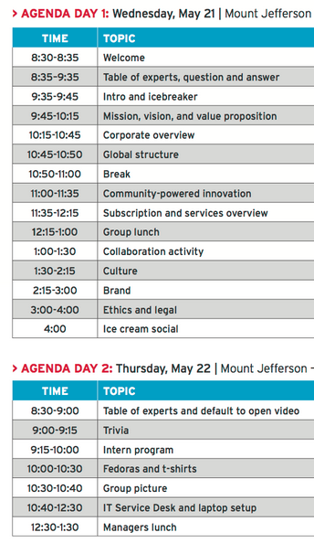

The Red Hat two day orientation is coming up fast. It looks like it's going to be pretty fun, but there is no way to be 100% sure.
Here is the schedule for the two days:

The notable things that I've taken away from the schedule are the 10 minute "Intro and Icebreaker" at 9:35, which I'm hoping will not be horribly embarrassing in any way shape or form. An hour long talk about "Ethics and Legal" does not sound like it would be terribly interesting either.
The "Ice Cream Social" event, at first glance, appears childish. Upon closer inspection though, it is likely very important that it should happen. That is all that needs to be said about that.
Pictured above is a team of interns from a previous year. I realize now that I have started writing these things that I don't know why I am writing them. Okay. Good post.

omgeee omega ruby and alpha sapphire yeeaaa boiii
I also spent some time today working on customizing a Fedora install and a picture of that is below.

Please don't hate me Chris, because I now love Fedora and obviously hate Debian, for it is the devil. We also love gnome3 and... qupzilla. That is all.